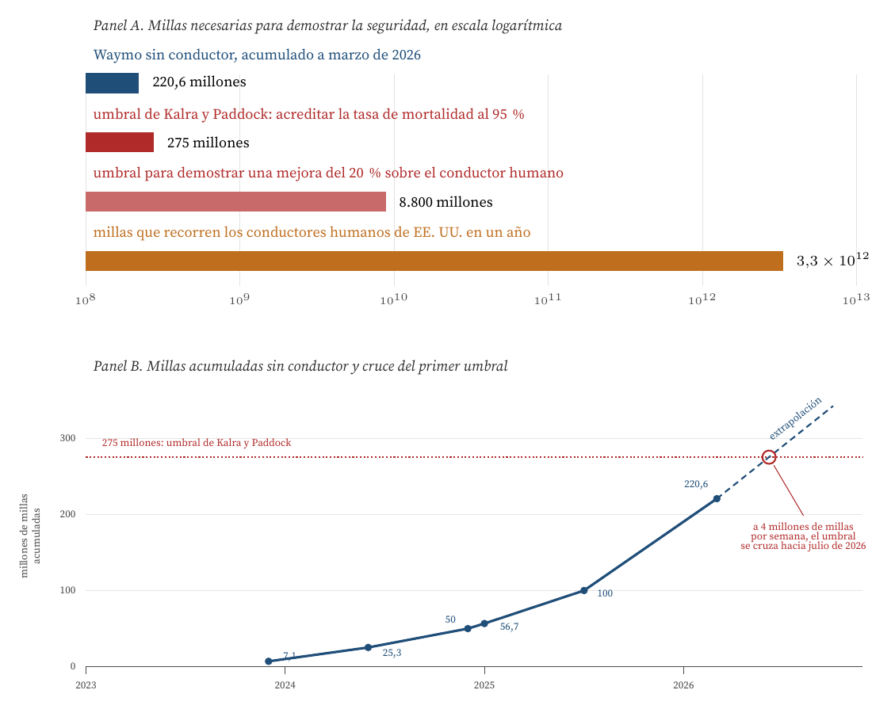
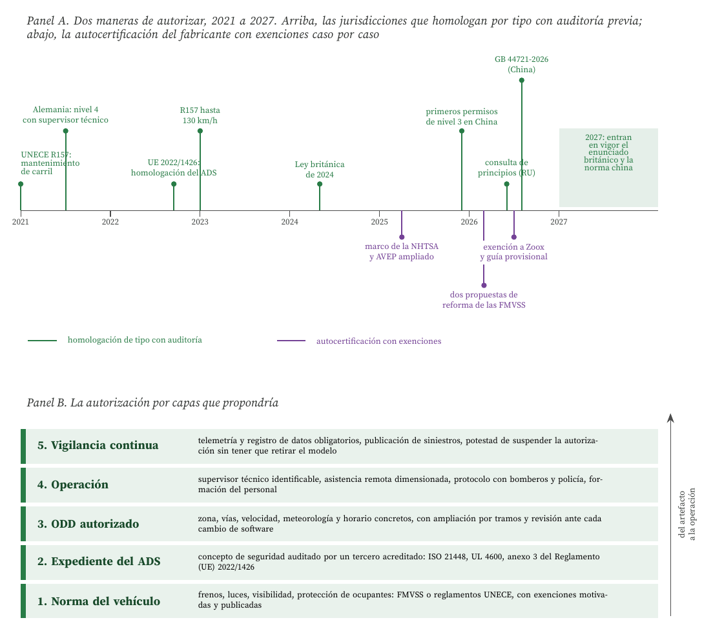
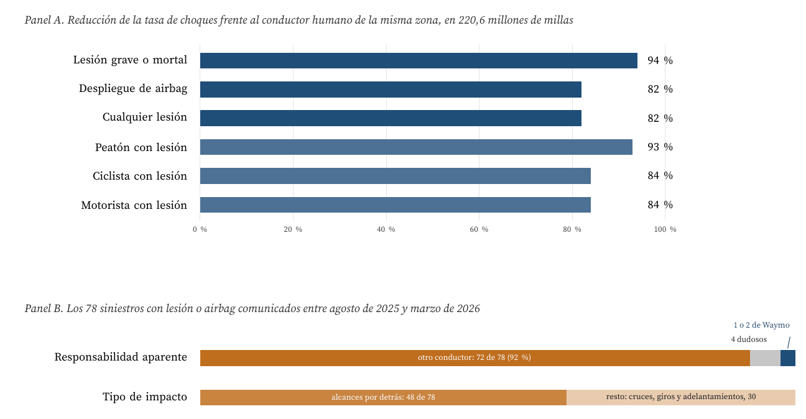
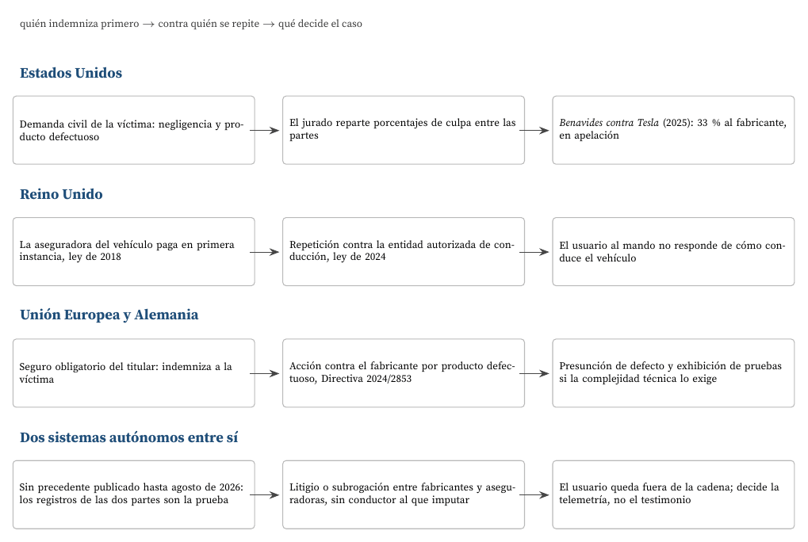
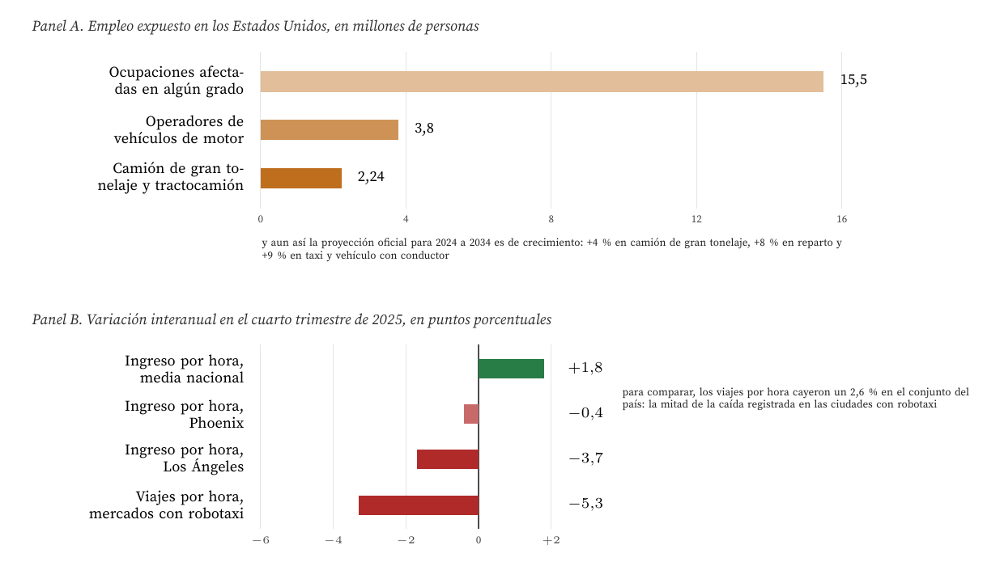

Cuatro preguntas con datos de agosto de 2026
Carlos Luis Rojas Aragonés
Las cuatro preguntas del foro ya no son hipotéticas, y eso cambia cómo hay que responderlas. A finales de marzo de 2026 el sistema de conducción de Waymo acumulaba 220,6 millones de millas recorridas sin conductor a bordo en cinco áreas metropolitanas de los Estados Unidos (Waymo, 2026b), con del orden de medio millón de viajes pagados por semana (CNBC, 2025). El 31 de julio de 2026 la NHTSA concedió a Zoox la primera exención de despliegue comercial para un vehículo construido en los Estados Unidos sin volante ni pedales, con un límite de 2.500 unidades al año y dispensa de ocho normas federales (Federal Register, 2026b). El 4 de agosto de 2026 China publicó su norma obligatoria de seguridad para sistemas de conducción automatizada, la GB 44721-2026, exigible desde el 1 de julio de 2027 (Tech Times, 2026). Y el Reino Unido tenía abierta, hasta el 9 de septiembre de 2026, la consulta sobre el enunciado de principios de seguridad que la Ley de Vehículos Automatizados de 2024 exige antes de autorizar el primer vehículo (Automated Vehicles Act 2024, 2024; Department for Transport, 2026).
Mi respuesta a las cuatro preguntas parte de una sola idea, que anticipo aquí: lo que hay que certificar no es un vehículo, es un proceso. La razón es cuantitativa: ninguna cantidad realista de millas de prueba permite demostrar estadísticamente que un sistema de conducción es seguro, y cada actualización de software reinicia esa cuenta. De ahí se derivan las otras tres respuestas: la restricción que sirve no es la valla física sino el dominio de diseño operativo autorizado; la responsabilidad tiene que desplazarse del conductor a una entidad identificable que responda por cómo conduce el vehículo; y el efecto sobre el empleo será pequeño en el agregado y muy concentrado en el tiempo y en el territorio, lo que es precisamente lo que hace que duela.
Nivel y dominio de diseño operativo. La norma SAE J3016 define seis niveles de automatización y, sobre todo, define el dominio de diseño operativo (ODD): el conjunto de condiciones (zona, vía, velocidad, meteorología, hora) en las que el sistema está diseñado para funcionar (SAE International, 2021). Un nivel 4 no es «un coche que conduce solo», es un coche que conduce solo dentro de un ODD declarado. Toda la discusión de certificación y de zonas cerradas es, en realidad, una discusión sobre quién autoriza y verifica ese ODD.
Figura de mérito. Una figura de mérito es una medida cuantitativa del desempeño de una tecnología en la función que presta (de Weck, 2022). Aquí la figura de mérito relevante no es la comodidad ni el consumo, sino la tasa de siniestros con lesión por millón de millas, y su comparación con la del conductor humano en la misma zona.
El límite estadístico. Kalra y Paddock (2016) calcularon cuántas millas haría falta recorrer para demostrar que un sistema autónomo es más seguro que un conductor humano. Para acreditar con un 95 por ciento de confianza una tasa de 1,09 muertes por cada 100 millones de millas hacen falta 275 millones de millas sin una sola muerte; para demostrar una mejora del 20 por ciento con el mismo nivel de confianza, 8.800 millones de millas. La conclusión de los autores es que las pruebas de carretera, por sí solas, nunca serán suficientes, y que la evaluación tiene que apoyarse en expedientes de seguridad, simulación y auditoría del proceso de ingeniería, que es exactamente el enfoque de la norma ISO 21448 sobre seguridad de la funcionalidad prevista y de la ANSI/UL 4600 (International Organization for Standardization, 2022; Koopman y Wagner, 2017; UL Standards & Engagement, 2020).
Y el marco jurídico. En economía del derecho, la elección entre responsabilidad por culpa y responsabilidad objetiva depende de quién controla el riesgo y de quién puede reducirlo a menor coste (Shavell, 1980). Cuando el conductor desaparece, el que controla el riesgo es quien escribe y actualiza el software. La consecuencia es que el régimen tiene que virar de la culpa del conductor a la responsabilidad del producto y del operador, y eso es literalmente lo que están haciendo el Reino Unido y la Unión Europea.

Figura 1. El límite estadístico de la certificación por millas. Panel A: los dos umbrales de Kalra y Paddock (2016) frente a lo acumulado por el mayor operador del mundo y frente a la exposición anual de los conductores humanos de los Estados Unidos, calculada a partir de las 36.640 muertes estimadas de 2025 y de la tasa de 1,10 por cada 100 millones de millas (National Highway Traffic Safety Administration, 2026a). Panel B: serie de millas acumuladas sin conductor a bordo, con los puntos documentados de 7,1 millones a finales de 2023 (Kusano et al., 2024), 25,3 millones a mediados de 2024 (Di Lillo et al., 2024), 50 millones al cierre de 2024 y 100 millones en julio de 2025 (The Robot Report, 2025), 56,7 millones del estudio revisado por pares (Kusano et al., 2025) y 220,6 millones a marzo de 2026 (Waymo, 2026b). La extrapolación usa el ritmo declarado de cuatro millones de millas semanales y es mía, no del operador. Elaboración propia.
El operador más grande del mundo, después de una década de desarrollo, está cruzando en estos meses el primero de los dos umbrales que hacen falta para una demostración estadística, y lo está cruzando en un ODD muy concreto: cinco áreas metropolitanas de clima benigno. El segundo umbral, el que permitiría afirmar con solidez estadística una mejora del 20 por ciento, está cuarenta veces más lejos. Y hay un detalle que agrava el problema: cada actualización relevante del software cambia el sistema evaluado, de modo que la cuenta de millas no se acumula sobre un objeto fijo. Certificar por millas recorridas es, por construcción, imposible.
Lo que sí se puede certificar es el proceso: el expediente de seguridad, la trazabilidad de las decisiones de ingeniería, la validación en simulación, la gestión de la seguridad de la organización y la vigilancia posterior al despliegue. Es el enfoque de la ISO 21448 y de la UL 4600, y es también lo que ya hace el Reglamento de Ejecución (UE) 2022/1426, que exige auditoría del sistema de gestión de la seguridad y evaluación del concepto de seguridad del ADS ante la autoridad de homologación, no una cifra de millas (Reglamento (UE) 2022/1426, 2022).

Figura 2. Los dos regímenes vigentes y la propuesta. Panel A: en la pista superior, las jurisdicciones que autorizan por homologación de tipo con auditoría previa, con el Reglamento UNECE 157 de 2021 y su ampliación a 130 km/h de enero de 2023 (United Nations Economic Commission for Europe, 2021, 2022), el Reglamento de Ejecución (UE) 2022/1426 (2022), la ley alemana de conducción autónoma de 2021 con su reglamento de 2022, que exige un supervisor técnico (Hogan Lovells, 2021; Taylor Wessing, 2026), la Ley británica de Vehículos Automatizados de 2024 con su consulta de principios de seguridad de junio de 2026 (Automated Vehicles Act 2024, 2024; Department for Transport, 2026) y los primeros permisos chinos de nivel 3 de diciembre de 2025 seguidos de la norma obligatoria GB 44721-2026 (CnEVPost, 2025; Tech Times, 2026). En la pista inferior, el régimen estadounidense de autocertificación: el marco de la NHTSA de abril de 2025 (National Highway Traffic Safety Administration, 2025), las dos propuestas de reforma de las FMVSS 102, 103 y 104 de marzo de 2026 (Sidley Austin, 2026) y la exención a Zoox con la guía provisional del 31 de julio de 2026 (Federal Register, 2026a, 2026b). Panel B: elaboración propia.
Mi respuesta concreta a la primera pregunta es el Panel B de la Figura 2: autorización por capas, con la última capa siempre abierta. Las cuatro primeras son las que ya existen, repartidas entre regímenes distintos. La quinta es la que decide, y es la que menos se discute: si la autoridad puede suspender una autorización de ODD en cuarenta y ocho horas ante un patrón anómalo, sin tener que abrir un expediente de retirada del modelo, entonces puede permitirse autorizar antes y con menos certeza. La reversibilidad barata es lo que hace aceptable la incertidumbre. Ese es también el punto débil del régimen estadounidense: funciona por exenciones puntuales de dos años (Federal Register, 2026b) y por guías no vinculantes (Federal Register, 2026a), mientras la vigilancia depende de una orden general de comunicación de siniestros cuyos informes, además, no determinan culpa (National Highway Traffic Safety Administration, 2026b).

Figura 3. La evidencia del tránsito mixto. Panel A: reducciones medidas por el operador sobre 220,6 millones de millas sin conductor, comparadas con la siniestralidad humana de las mismas zonas (Waymo, 2026a, 2026b); el estudio revisado por pares con 56,7 millones de millas obtiene reducciones del mismo orden desglosadas por tipo de choque (Kusano et al., 2025), y el análisis de reclamaciones de seguro de Swiss Re, del 88 por ciento en daños materiales y del 92 por ciento en daños personales sobre 25,3 millones de millas, es independiente del operador (Di Lillo et al., 2024). Panel B: reparto de los 78 informes remitidos a la NHTSA, con la responsabilidad aparente leída de los relatos y sin resolución oficial de culpa, entre el 15 de agosto de 2025 y el 16 de marzo de 2026, según la lectura de los relatos hecha por Lee (2026); los informes de la orden general acreditan que hubo choque, no quién tuvo la culpa (National Highway Traffic Safety Administration, 2026b). Elaboración propia.
Mi respuesta a la segunda pregunta es que la separación física no es la variable de control correcta, y además ya está superada por los hechos. Tres argumentos.
Primero: el tránsito mixto ya se está midiendo, y el resultado no sostiene la prohibición. Sobre 220,6 millones de millas en tránsito urbano abierto, con peatones, ciclistas y conductores humanos, las reducciones son del 94 por ciento en choques con lesión grave o mortal y del 82 por ciento en choques con cualquier lesión (Waymo, 2026b). Un estudio revisado por pares con 56,7 millones de millas llega a magnitudes equivalentes desglosadas por tipo de choque (Kusano et al., 2025) y una aseguradora, con datos de reclamaciones y no de la propia empresa, obtiene un 88 y un 92 por ciento (Di Lillo et al., 2024). Prohibir la mezcla exigiría demostrar que la mezcla es peor que lo que ya tenemos, y la evidencia disponible apunta al contrario.
Segundo: en la mezcla, el eslabón que falla es el humano. De los 78 siniestros con lesión o airbag comunicados entre agosto de 2025 y marzo de 2026, 72 se originaron en la conducta de otro conductor y 48 fueron alcances por detrás, muchos de ellos contra un vehículo detenido en un semáforo o cediendo el paso a un peatón (Lee, 2026). Esto es coherente con el dato clásico de que en el 94 por ciento de los choques la última causa de la cadena se atribuye al conductor (Singh, 2015). Segregar los vehículos autónomos, en este escenario, equivaldría a apartar al conductor que no comete la infracción.
Tercero: la restricción sí existe, pero es el ODD. Ningún robotaxi circula hoy por donde quiere: circula por una zona geovallada, a velocidades acotadas y con condiciones meteorológicas declaradas. Eso es una restricción real y auditable, y tiene la propiedad de poder ampliarse por tramos, cosa que una infraestructura dedicada no tiene: los carriles exclusivos exigen inversión irreversible, no escalan al conjunto de la red y no resuelven el problema de las intersecciones, que es donde ocurren los choques graves. Dicho esto, la ampliación no puede ser automática. El caso del menor golpeado en un paso escolar de Santa Mónica, investigado por la NHTSA desde enero de 2026 (CNBC, 2026), es el tipo de suceso que justifica condiciones específicas por microzona (entornos escolares, obras, eventos) antes que vallas generales.

Figura 4. Quién responde en cada régimen. Estados Unidos no tiene una regla especial para vehículos autónomos: la asignación la hace el jurado caso por caso, como en el veredicto de Benavides contra Tesla de agosto de 2025, que atribuyó al fabricante el 33 por ciento de la responsabilidad y está recurrido (Wood Smith Henning & Berman, 2025). El Reino Unido separa el pago de la imputación: la aseguradora indemniza de entrada (Automated and Electric Vehicles Act 2018, 2018) y luego repite contra la entidad autorizada de conducción, que es la responsable de cómo conduce el vehículo (Automated Vehicles Act 2024, 2024; CMS, 2024). En la Unión Europea el seguro obligatorio del titular convive con la nueva directiva de productos defectuosos, que incluye el software y las actualizaciones, invierte de hecho la carga de la prueba cuando la complejidad técnica lo justifica y obliga a exhibir pruebas (Directiva (UE) 2024/2853, 2024; Reed Smith, 2025); Alemania añade la figura del supervisor técnico, cubierta por el seguro (Hogan Lovells, 2021; Taylor Wessing, 2026). Elaboración propia.
El principio: donde no hay conductor, no puede haber culpa del conductor. Quien controla el riesgo es quien diseña, entrena y actualiza el sistema, de modo que la responsabilidad debe recaer sobre el operador y el fabricante, no sobre el ocupante (Shavell, 1980). El Reino Unido lo ha resuelto de la forma más limpia: el usuario al mando no responde de cómo conduce el vehículo, la aseguradora indemniza en primera instancia y luego repite contra la entidad autorizada de conducción (Automated and Electric Vehicles Act 2018, 2018; Automated Vehicles Act 2024, 2024; CMS, 2024). La víctima no tiene que averiguar quién falló para cobrar, que es exactamente lo que hay que conseguir.
Contra un conductor convencional el resultado depende del régimen. En la Unión Europea el seguro obligatorio del titular paga y la acción posterior se dirige contra el fabricante por producto defectuoso, con dos novedades que importan mucho: la Directiva (UE) 2024/2853 considera producto al software y a sus actualizaciones, y permite presumir el defecto y el nexo causal cuando la complejidad técnica hace excesivamente difícil la prueba, además de obligar al demandado a exhibir la información técnica (Directiva (UE) 2024/2853, 2024; Reed Smith, 2025). En los Estados Unidos, sin regla especial, el reparto lo hace un jurado, con la volatilidad que muestra el 33 por ciento imputado al fabricante en Benavides contra Tesla (Wood Smith Henning & Berman, 2025).
Entre dos vehículos autónomos no hay precedente publicado hasta agosto de 2026, y no es casualidad: son pocos, están concentrados y sus siniestros con otros vehículos son casi siempre alcances provocados por humanos (California Department of Motor Vehicles, 2026; Lee, 2026). Cuando ocurra, el caso se decidirá por los registros de datos de los dos sistemas, no por testimonios, y se resolverá entre fabricantes y aseguradoras sin que ningún usuario tenga nada que declarar. Esto tiene una consecuencia práctica que sí depende de nosotros: el registro de datos del suceso tiene que ser obligatorio, normalizado e independiente del fabricante. Sin eso, el régimen de responsabilidad es teórico.

Figura 5. Empleo expuesto y efectos ya observables. Panel A: 15,5 millones de trabajadores en ocupaciones afectadas en algún grado y 3,8 millones de operadores de vehículos de motor (Beede et al., 2017), frente a los 2.235.100 conductores de camión de gran tonelaje contabilizados en 2024 y a proyecciones oficiales que siguen siendo de crecimiento (Bureau of Labor Statistics, 2026a, 2026b). Panel B: variación interanual del cuarto trimestre de 2025 en los mercados con robotaxi frente al conjunto del país, según los datos propios de una plataforma de análisis para conductores (Gridwise Analytics, 2026); es un panel no representativo y así hay que leerlo. Elaboración propia.
Creo que la pregunta está mal planteada cuando se formula como pérdida o incremento, porque las dos cosas ocurren y no a la misma velocidad.
En el agregado, el efecto medido es pequeño. El estudio más cuidadoso que conozco estima entre 1,3 y 2,3 millones de empleos afectados en treinta años en los Estados Unidos, con un efecto sobre la tasa de desempleo de entre 0,06 y 0,13 puntos porcentuales en la década de mayor impacto (Groshen et al., 2018). Esa magnitud es la mitad de lo que supuso la pérdida de empleo industrial y está repartida en tres décadas. La proyección oficial de empleo, entretanto, sigue siendo de crecimiento en las tres ocupaciones de conducción más numerosas (Bureau of Labor Statistics, 2026a, 2026b), lo que da una idea de lo lento que el regulador espera que sea el proceso.
En lo local, el efecto ya se nota. En el cuarto trimestre de 2025, los viajes por hora de los conductores de plataforma cayeron un 5,3 por ciento en los mercados con robotaxi frente a un 2,6 por ciento en el conjunto del país, y el ingreso por hora bajó en Los Ángeles, San Francisco y Phoenix mientras subía un 1,8 por ciento a escala nacional (Gridwise Analytics, 2026). Es exactamente el patrón que describe la literatura de automatización: el efecto de desplazamiento llega antes y más concentrado que el de recomposición (Acemoglu y Restrepo, 2020; Autor, 2015).
Y los empleos nuevos existen, pero no son los mismos ni están en el mismo sitio. La operación de una flota sin conductor necesita asistencia remota, mantenimiento, limpieza, gestión de depósitos, cartografía, anotación de datos y respuesta a incidentes. Cruise declaró un asistente remoto por cada 15 a 20 vehículos (CNBC, 2023) y Alemania exige por ley una supervisión técnica humana capaz de detener el vehículo y hablar con los ocupantes (Hogan Lovells, 2021; Taylor Wessing, 2026). Son puestos reales, pero con una razón de sustitución desfavorable, con otro perfil de cualificación y concentrados en las sedes del operador, no en las ciudades donde se pierde el turno de taxi.
| Fecha | Hecho |
|---|---|
| 01/2021 | Entra en vigor el Reglamento UNECE 157 para el mantenimiento automatizado de carril |
| 04/2021 | SAE J3016: última revisión de la taxonomía de niveles y del dominio de diseño operativo |
| 07/2021 | Alemania aprueba la ley de conducción autónoma de nivel 4 con supervisor técnico |
| 09/2022 | Reglamento de Ejecución (UE) 2022/1426: homologación del ADS con auditoría del sistema de gestión |
| 01/2023 | El Reglamento 157 se amplía a 130 km/h y permite cambio de carril |
| 05/2024 | Ley británica de Vehículos Automatizados: entidad autorizada de conducción y usuario al mando |
| 10/2024 | Directiva (UE) 2024/2853: el software es producto y se presume el defecto si la prueba es excesivamente difícil |
| 24/04/2025 | La NHTSA publica su marco de vehículos autónomos y amplía el programa de exenciones a los vehículos nacionales |
| 15/07/2025 | Waymo alcanza 100 millones de millas sin conductor, el doble que seis meses antes |
| 01/08/2025 | Veredicto en Benavides contra Tesla: 33 por ciento de responsabilidad al fabricante, recurrido |
| 12/2025 | China concede los primeros permisos de nivel 3 a turismos, en rutas designadas |
| 08/12/2025 | Waymo supera los 450.000 viajes pagados por semana |
| 29/01/2026 | La NHTSA abre investigación por el atropello de un menor en un entorno escolar de Santa Mónica |
| 16/03/2026 | Dos propuestas de reforma de las FMVSS 102, 103 y 104 para vehículos sin mandos manuales |
| 31/03/2026 | 220,6 millones de millas acumuladas sin conductor a bordo |
| 17/06/2026 | El Reino Unido abre la consulta del enunciado de principios de seguridad, con plazo hasta el 9 de septiembre |
| 31/07/2026 | Primera exención de despliegue comercial a un vehículo sin volante fabricado en EE. UU., hasta 2.500 unidades al año |
| 04/08/2026 | China publica la norma obligatoria GB 44721-2026, exigible desde julio de 2027 |
| 2.º sem. 2027 | Fecha prevista de plena aplicación del régimen británico |
| Escenario | Estados Unidos | Reino Unido | UE y Alemania |
|---|---|---|---|
| Autónomo contra conductor humano | jurado: negligencia y producto, reparto por porcentajes | aseguradora primero, repetición contra la entidad autorizada | seguro del titular primero, luego producto defectuoso |
| Autónomo contra autónomo | sin precedente: litigio entre fabricantes | dos entidades autorizadas frente a frente | dos fabricantes, con exhibición de pruebas obligatoria |
| Atropello de peatón | responsabilidad civil, con riesgo de daños punitivos | igual que el primer escenario, sin culpa del usuario | igual, más responsabilidad penal del supervisor si desatiende |
| Nivel 3 con conductor presente | zona gris: la transferencia de control decide el caso | el usuario al mando responde solo fuera del modo autónomo | el conductor responde tras la petición de recuperación |
| Fallo de la asistencia remota | operador, por negligencia en la operación | la entidad autorizada, por incumplir sus obligaciones | el supervisor técnico y el operador, con seguro obligatorio |
| Prueba que decide | la que consiga el litigio | los registros exigidos a la entidad autorizada | registro del suceso más presunción a favor de la víctima |
Certificación. Por proceso y por capas, no por millas ni por modelo. El umbral estadístico que haría creíble una certificación basada en kilometraje está fuera de alcance (Kalra y Paddock, 2016), de modo que hay que auditar el expediente de seguridad, autorizar un ODD explícito, exigir supervisión y telemetría y conservar la potestad de suspender esa autorización de un día para otro. La homologación europea con auditoría se acerca más a ese modelo que la autocertificación con exenciones puntuales.
Zonas cerradas o tránsito mixto. Mixto, con el ODD como valla. La segregación física es caro, irreversible y no ataca el punto donde se producen los choques graves; la geovalla, en cambio, es una restricción real que se puede ampliar por tramos y revocar. La evidencia disponible sobre 220,6 millones de millas en tránsito abierto no sostiene la prohibición de mezclar, y sí sostiene condiciones específicas para microzonas sensibles.
Responsabilidad. Del conductor al operador y al fabricante, con pago en primera instancia por el seguro y repetición posterior, que es el diseño británico. Entre dos vehículos autónomos, la disputa será entre fabricantes y se decidirá por los registros de datos, lo que convierte al registro obligatorio y normalizado en el requisito jurídico más importante de todo el paquete.
Empleo. Las dos cosas, pero desalineadas. Poco en el agregado y en treinta años (Groshen et al., 2018), mucho en unas pocas ciudades y en dos o tres años, lo que ya se está midiendo (Gridwise Analytics, 2026). Los puestos nuevos son reales y necesarios, pero con razones de uno por cada quince o veinte vehículos y con otro perfil.
La lección que me llevo como CTO es de gobierno de la tecnología, no de tecnología: cuando no se puede demostrar que un sistema es seguro antes de desplegarlo, la única alternativa responsable es hacer que desplegarlo sea reversible. Autorización acotada, medición obligatoria, publicación de los siniestros y capacidad de apagarlo. Es menos elegante que una certificación definitiva, y es lo único que funciona cuando el sistema que hay que certificar cambia con cada actualización.
Acemoglu, D., y Restrepo, P. (2020). Robots and jobs: Evidence from US labor markets. Journal of Political Economy, 128(6), 2188-2244. https://doi.org/10.1086/705716
Automated and Electric Vehicles Act 2018 (c. 18) (2018). https://www.legislation.gov.uk/ukpga/2018/18/contents
Automated Vehicles Act 2024 (c. 10) (2024). https://www.legislation.gov.uk/ukpga/2024/10/contents
Autor, D. H. (2015). Why are there still so many jobs? The history and future of workplace automation. Journal of Economic Perspectives, 29(3), 3-30. https://doi.org/10.1257/jep.29.3.3
Beede, D., Powers, R., y Ingram, C. (2017). The employment impact of autonomous vehicles (ESA Issue Brief N.º 05-17). Office of the Chief Economist, Economics and Statistics Administration, U.S. Department of Commerce. https://papers.ssrn.com/sol3/papers.cfm?abstract_id=3022818
Bureau of Labor Statistics. (2026a). Heavy and tractor-trailer truck drivers. Occupational Outlook Handbook [2.235.100 empleos en 2024; proyección de crecimiento del 4 por ciento entre 2024 y 2034]. https://www.bls.gov/ooh/transportation-and-material-moving/heavy-and-tractor-trailer-truck-drivers.htm
Bureau of Labor Statistics. (2026b). Taxi drivers, shuttle drivers, and chauffeurs. Occupational Outlook Handbook [Proyección de crecimiento del 9 por ciento entre 2024 y 2034]. https://www.bls.gov/ooh/transportation-and-material-moving/taxi-drivers-and-chauffeurs.htm
California Department of Motor Vehicles. (2026). Autonomous vehicle collision reports [966 informes recibidos al 27 de marzo de 2026]. https://www.dmv.ca.gov/portal/vehicle-industry-services/autonomous-vehicles/autonomous-vehicle-collision-reports/
CMS. (2024). Automated Vehicles Act 2024: A deeper dive into its key implications for the automotive sector. https://cms-lawnow.com/en/ealerts/2024/07/automated-vehicles-act-2024-a-deeper-dive-into-its-key-implications-for-the-automotive-sector
CNBC. (2023, 6 de noviembre). Cruise confirms robotaxis rely on human assistance every four to five miles. https://www.cnbc.com/2023/11/06/cruise-confirms-robotaxis-rely-on-human-assistance-every-4-to-5-miles.html
CNBC. (2025, 8 de diciembre). Waymo crosses 450.000 weekly paid rides as Alphabet robotaxi unit widens lead on Tesla. https://www.cnbc.com/2025/12/08/waymo-paid-rides-robotaxi-tesla.html
CNBC. (2026, 29 de enero). A Waymo hit a child near an elementary school. The NHTSA is investigating. https://www.cnbc.com/2026/01/29/waymo-nhtsa-crash-child-school.html
CnEVPost. (2025, 15 de diciembre). China grants first L3 autonomous driving permits for regular passenger cars. https://cnevpost.com/2025/12/15/china-grants-1st-l3-autonomous-driving-permits-passenger-cars/
Department for Transport. (2026, 17 de junio). Automated vehicles: Statement of safety principles. Consulta pública. https://www.gov.uk/government/consultations/automated-vehicles-statement-of-safety-principles
de Weck, O. L. (2022). Technology roadmapping and development: A quantitative approach to the management of technology. Springer. https://doi.org/10.1007/978-3-030-88346-1
Di Lillo, L., Gode, T., Zhou, X., Chen, R., y Victor, T. (2024). Do autonomous vehicles outperform latest-generation human-driven vehicles? A comparison to Waymo's auto liability insurance claims at 25 million miles. Swiss Re y Waymo. https://waymo.com/research/do-autonomous-vehicles-outperform-latest-generation-human-driven-vehicles-25-million-miles/
Directiva (UE) 2024/2853 del Parlamento Europeo y del Consejo, de 23 de octubre de 2024, sobre responsabilidad por los daños causados por productos defectuosos (2024). https://eur-lex.europa.eu/eli/dir/2024/2853/oj/eng
Federal Register. (2026a, 31 de julio). AV framework updates and request for comments on interim guidance. https://www.federalregister.gov/documents/2026/07/31/2026-15483/av-framework-updates-and-request-for-comments-on-interim-guidance
Federal Register. (2026b, 31 de julio). Zoox: Grant of temporary exemption from portions of various requirements of the Federal Motor Vehicle Safety Standards for an automated driving system-equipped vehicle. https://www.federalregister.gov/documents/2026/07/31/2026-15485/zoox-grant-of-temporary-exemption-from-portions-of-various-requirements-of-the-federal-motor-vehicle
Gridwise Analytics. (2026). Autonomous vehicle impact report (Datos propios de conductores, del primer trimestre de 2024 al cuarto de 2025). Gridwise. https://gridwise.io/analytics/autonomous-vehicle-impact-on-traditional-rideshare-report
Groshen, E. L., Helper, S., MacDuffie, J. P., y Carson, C. (2018). Preparing U.S. workers and employers for an autonomous vehicle future (Informe técnico N.º 19-036). W. E. Upjohn Institute for Employment Research. https://research.upjohn.org/up_technicalreports/36/
Hogan Lovells. (2021). Germany takes a pioneering role with a new law on autonomous driving. https://www.hoganlovells.com/en/publications/germany-takes-a-pioneering-role-with-a-new-law-on-autonomous-driving_1
International Organization for Standardization. (2022). Road vehicles: Safety of the intended functionality (Norma N.º ISO 21448:2022). ISO. https://www.iso.org/standard/77490.html
Kalra, N., y Paddock, S. M. (2016). Driving to safety: How many miles of driving would it take to demonstrate autonomous vehicle reliability? Transportation Research Part A: Policy and Practice, 94, 182-193. https://doi.org/10.1016/j.tra.2016.09.010
Koopman, P., y Wagner, M. (2017). Autonomous vehicle safety: An interdisciplinary challenge. IEEE Intelligent Transportation Systems Magazine, 9(1), 90-96. https://doi.org/10.1109/MITS.2016.2583491
Kusano, K. D., Scanlon, J. M., Chen, Y.-H., McMurry, T. L., Chen, R., Gode, T., y Victor, T. (2024). Comparison of Waymo rider-only crash data to human benchmarks at 7.1 million miles [Preprint arXiv:2312.12675, publicado después en Traffic Injury Prevention]. https://arxiv.org/abs/2312.12675
Kusano, K. D., Scanlon, J. M., Chen, Y.-H., McMurry, T. L., Gode, T., y Victor, T. (2025). Comparison of Waymo Rider-Only crash rates by crash type to human benchmarks at 56.7 million miles. Traffic Injury Prevention, 26(sup1), S8-S20. https://doi.org/10.1080/15389588.2025.2499887
Lee, T. B. (2026). Human drivers keep crashing into Waymos [Análisis de los 78 informes de siniestro remitidos por Waymo a la NHTSA entre el 15 de agosto de 2025 y el 16 de marzo de 2026]. https://www.understandingai.org/p/human-drivers-keep-crashing-into-454
National Highway Traffic Safety Administration. (2025, 24 de abril). NHTSA announces new automated vehicle framework. https://www.nhtsa.gov/press-releases/nhtsa-part-555-exemption-avep-framework
National Highway Traffic Safety Administration. (2026a). Early estimate of motor vehicle traffic fatalities and fatality rate by sub-categories in 2025 (Informe N.º DOT HS 813 829). U.S. Department of Transportation. https://crashstats.nhtsa.dot.gov/Api/Public/ViewPublication/813829
National Highway Traffic Safety Administration. (2026b). Standing general order on crash reporting [Consultado el 19 de agosto de 2026]. https://www.nhtsa.gov/laws-regulations/standing-general-order-crash-reporting
NBC Bay Area. (2025). While Waymo not blamed in multi-car wreck, it's the first fatal collision involving a driverless car. https://www.nbcbayarea.com/investigations/waymo-multi-car-wreck-san-francisco-driverless/3766860/
Reed Smith. (2025, octubre). The new EU Product Liability Directive: Key implications for automotive and autonomous vehicle companies. https://www.reedsmith.com/en/perspectives/2025/10/the-new-eu-product-liability-key-implications-autonomous-vehicle
Reglamento de Ejecución (UE) 2022/1426 de la Comisión, por el que se establecen normas de desarrollo del Reglamento (UE) 2019/2144 en lo relativo a los procedimientos uniformes y las especificaciones técnicas para la homologación de tipo del sistema de conducción automatizada (ADS) de vehículos totalmente automatizados (2022). https://eur-lex.europa.eu/eli/reg_impl/2022/1426/oj/eng
SAE International. (2021). Taxonomy and definitions for terms related to driving automation systems for on-road motor vehicles (Norma N.º J3016_202104). SAE International. https://doi.org/10.4271/J3016_202104
Shavell, S. (1980). Strict liability versus negligence. The Journal of Legal Studies, 9(1), 1-25. https://doi.org/10.1086/467626
Sidley Austin. (2026, 23 de marzo). NHTSA proposes amending federal crash avoidance standards for autonomous vehicles. https://environmentalhealthsafetybrief.sidley.com/2026/03/23/nhtsa-proposes-amending-federal-crash-avoidance-standards-for-autonomous-vehicles/
Singh, S. (2015). Critical reasons for crashes investigated in the National Motor Vehicle Crash Causation Survey (Informe N.º DOT HS 812 115). National Highway Traffic Safety Administration. https://crashstats.nhtsa.dot.gov/Api/Public/Publication/812115
Taylor Wessing. (2026, febrero). Legal frameworks for autonomous driving and teledriving in the EU and Germany. https://www.taylorwessing.com/en/insights-and-events/insights/2026/02/legal-frameworks-for-autonomous-driving-and-teledriving
Tech Times. (2026, 5 de agosto). China's L3/L4 safety standard blocks foreign certification: July 2027 deadline for global automakers [Norma obligatoria GB 44721-2026, publicada el 4 de agosto de 2026]. https://www.techtimes.com/articles/323191/20260805/chinas-l3-l4-safety-standard-blocks-foreign-certification-july-2027-deadline-global-automakers.htm
Templeton, B. (2026, 10 de agosto). Waymo fatality likely not-at-fault: Here are new details and what-ifs. Forbes. https://www.forbes.com/sites/bradtempleton/2026/08/10/waymo-fatality-likely-not-at-fault-here-are-new-details-and-what-ifs/
The Robot Report. (2025, 15 de julio). Waymo reaches 100M fully autonomous miles across all deployments. https://www.therobotreport.com/waymo-reaches-100m-fully-autonomous-miles-across-all-deployments/
UL Standards & Engagement. (2020). Standard for safety for the evaluation of autonomous products (Norma N.º ANSI/UL 4600). UL Standards & Engagement. https://ulse.org/ul-standards-engagement/autonomy/ul-4600
United Nations Economic Commission for Europe. (2021). UN Regulation No. 157: Uniform provisions concerning the approval of vehicles with regard to Automated Lane Keeping Systems (Reglamento) (Revisión 1 publicada en 2025). UNECE. https://unece.org/sites/default/files/2025-06/R157r1e.pdf
United Nations Economic Commission for Europe. (2022). UN regulation extends automated driving up to 130 km/h in certain conditions. https://unece.org/sustainable-development/press/un-regulation-extends-automated-driving-130-kmh-certain-conditions
Waymo. (2026a, 24 de junio). Safety data update: 220 millones de millas sin conductor. https://waymo.com/blog/shorts/safetydata-june26/
Waymo. (2026b). Waymo safety impact [Datos acumulados hasta el 31 de marzo de 2026, consultados el 19 de agosto de 2026]. https://waymo.com/safety/impact/
Wood Smith Henning & Berman. (2025). Benavides v. Tesla: A defense-side perspective on Florida's landmark Autopilot verdict. https://www.wshblaw.com/publication-benavides-v-tesla-a-defense-side-perspective-on-floridas-landmark-autopilot-verdict